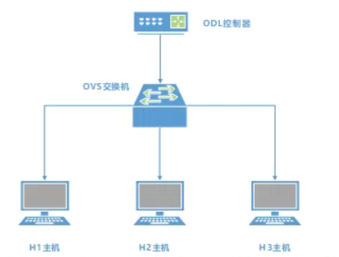
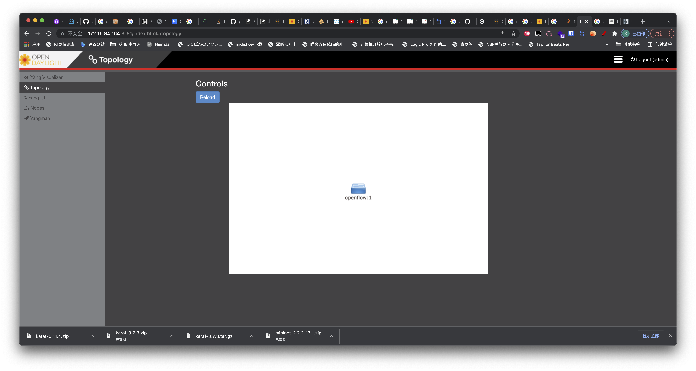

SDN
2022 年国赛中新增了 SDN 部分，样题要求出现了使用 mininet 搭建简单的 SDN 拓扑。
既然对 SDN 有了考察，并且比赛文件中出现了 Virt-Manager 软件，我大胆预测近年的比赛会增加对 KVM 虚拟化的考察。
由此可以推论，部署 KVM 虚拟机，将其网络挂载到 OVS 一类的考题也是完全可能出现的。
这些都是题外话，我们来一起看一下本次的样题中出现的 SDN 考察项目。
介绍
OpenDaylight
OpenDayLight 是多家网络厂商联合，社区驱动的一款开源的 SDN 控制器，他支持 Rest API 风格的北向接口，支持 Yang, NetConf, OpenFlow 等多种风格的南向接口，是当今开源 SDN 解决方案的主力军。
OpenVSwitch
OpenVSwitch 是一个开源的，社区驱动的，兼容 OpenFlow 协议，支持主要 L2 功能的开源交换机组件。OpenVSwitch 的开发是对标 VMware 分布式虚拟交换机，和 Cisco Nexus 1000V 而设计的，因此被大量应用在开源 IaaS 平台中，例如 OpenStack 等，开源高性能网络方案 DPDK 也移植了 OVS 部分，称作 OVS-DPDK，是当今 Linux 下高性能数据中心网络的主流解决方案。
mininet
mininet 是一个轻量级的网络平台，利用 mininet 可以快速创建拓扑，进行 SDN 的实验。
Lab
先来看实验要求与拓扑
Requirements
- 安装opendaylight、mininet、Ovs软件平台。。
- 启动OpenDayLight的karaf程序，安装如下组件：odl-restconf、odl-l2switch-switch-ui、odl-mdsal-apidocs、odl-dluxapps-applications。
- 使用Mininet和OpenVswitch构建拓扑，连接ODL的6653端口如下拓扑结构：

- 在浏览器上可以访问ODL管理页面查看网元拓扑结构。
- 通过OVS手工下发流表，H1可以ping通H3，H1、H3无法ping通H2。
- H1启动HTTP-Server功能，WEB端口为8080，H3作为HTTP-Client，获取H1的html网页配置文件。
Solution
安装 mininet
DLBD 1 里没有 mininet，但实际网络源里是有的，也许在 DLBD 2 里会有
我安装的时候使用的是网络源
尽管赛题里，这个节点是在 CentOS 运行的，但我认为在 CentOS 上考这道题的可能性很小。
这道题不可能放在 CentOS 上做，CentOS 必须从源码安装，mininet 也没有给出对 CentOS 的明确支持。连 mininet 的安装脚本也没有支持 CentOS，CentOS 也没有 OpenVSwitch 的包。
换句话说，如果这道题要在 CentOS 完成，不但所有依赖包都要从源码编译，而且也不保证可用性，而使用 Debian 则会很简单
$ apt install mininet
# openvswitch 会作为 mininet 的依赖安装
部署 OpenDayLight
提醒一句，OpenDayLight 版本太新是没有所需的功能的，最高只能使用 0.7.3 即 Nitrogen 版本
下载地址为 这里
上传 OpenDayLight 到主机，解压
$ tar -xvf karaf-0.7.3.tar.gz
OpenDaylight 使用 Java，先安装 JRE
现在出现了一个问题
0.7.3 版本的 ODL 需要 JRE 8，但 Debian 的源里不提供 JDK 8，安装 JRE 11 是不支持的。
CentOS 确实会提供 JDK 8，安装 java-1.8.0-openjdk-headless 即可。
若实在有需求，可将 mininet 和 ODL 装在不同主机上
$ yum install java-1.8.0-openjdk-headless
或者可以搜索一下 jre 看是否有对应版本
由于无需运行带有 GUI 的 Java 程序，安装无头模式的 JRE 即可
cd 进解压的目录，启动 OpenDaylight 并登录进 OpenDayLight CLI
$ cd karaf-0.7.3/
$ ./bin/start
$ ./bin/client
在这个 CLI 界面当中也可以管理 OpenDayLight，首先安装必要的功能
首先可以先列出支持的功能列表
$ feature:list
安装需求文档中需要的功能
$ feature:install odl-restconf odl-l2switch-switch-ui odl-m dsal-apidocs odl-dluxapps-applications
安装完成后即可使用 logout 退出
打开浏览器，访问 :8181/index.html 即可打开 WebUI，默认用户名和密码为 admin/admin
使用 mininet 创建拓扑
接下来用 mininet 创建网络拓扑
好在这个拓扑非常简单，不需要我们写 Python 脚本也可以完成
$ mn --topo=single,3 --controller=remote,ip=127.0.0.1 --switch=ovs,protocols=OpenFlow13
启动后，在 OpenDayLight 的 UI 中应该能看到一台 OpenFlow 交换机。

查看交换机信息，可以使用 ovs-vsctl 命令，在 mininet 中，在执行的命令前面加上 sh 即可运行系统命令
mininet> sh ovs-vsctl show
24e49e35-e6f2-447e-8815-836b6d53f67d
Bridge s1
Controller "tcp:127.0.0.1:6653"
is_connected: true
Controller "ptcp:6654"
fail_mode: secure
Port s1-eth3
Interface s1-eth3
Port s1
Interface s1
type: internal
Port s1-eth1
Interface s1-eth1
Port s1-eth2
Interface s1-eth2
ovs_version: "2.13.5"
根据题意，我们需要用 OVS 手动下发流表，对于这个拓扑，只需要让 h1 和 h3 能够通信，因此只需要简单的让 h1 发送的数据丢给 h3，h3 的数据丢给 h1 即可。
在 mininet 的 CLI 中，创建流表
mininet> dpctl add-flow in_port=1,actions=output:3
*** s1 ------------------------------------------------------------------------
mininet> dpctl add-flow in_port=3,actions=output:1
*** s1 ------------------------------------------------------------------------
检测连通性，同样是在 mininet 中进行
mininet> h1 ping h3
PING 10.0.0.3 (10.0.0.3) 56(84) bytes of data.
64 字节，来自 10.0.0.3: icmp_seq=1 ttl=64 时间=2.75 毫秒
64 字节，来自 10.0.0.3: icmp_seq=2 ttl=64 时间=0.647 毫秒
64 字节，来自 10.0.0.3: icmp_seq=3 ttl=64 时间=0.059 毫秒
64 字节，来自 10.0.0.3: icmp_seq=4 ttl=64 时间=0.073 毫秒
^C
--- 10.0.0.3 ping 统计 ---
已发送 4 个包， 已接收 4 个包, 0% 包丢失, 耗时 3045 毫秒
rtt min/avg/max/mdev = 0.059/0.883/2.754/1.105 ms
而对于 h2
mininet> h1 ping h2
PING 10.0.0.2 (10.0.0.2) 56(84) bytes of data.
^C
--- 10.0.0.2 ping 统计 ---
已发送 3 个包， 已接收 0 个包, 100% 包丢失, 耗时 2040 毫秒
可以检查一下流表
mininet> dpctl dump-flows
*** s1 ------------------------------------------------------------------------
cookie=0x2b00000000000000, duration=1146.267s, table=0, n_packets=2, n_bytes=140, priority=2,in_port="s1-eth3" actions=output:"s1-eth1",output:"s1-eth2",CONTROLLER:65535
cookie=0x2b00000000000001, duration=1146.267s, table=0, n_packets=2, n_bytes=140, priority=2,in_port="s1-eth1" actions=output:"s1-eth3",output:"s1-eth2",CONTROLLER:65535
cookie=0x2b00000000000002, duration=1146.267s, table=0, n_packets=2, n_bytes=140, priority=2,in_port="s1-eth2" actions=output:"s1-eth3",output:"s1-eth1",CONTROLLER:65535
cookie=0x0, duration=199.699s, table=0, n_packets=9, n_bytes=602, in_port="s1-eth1" actions=output:"s1-eth3"
cookie=0x0, duration=185.006s, table=0, n_packets=6, n_bytes=476, in_port="s1-eth3" actions=output:"s1-eth1"
cookie=0x2b00000000000000, duration=1147.829s, table=0, n_packets=0, n_bytes=0, priority=100,dl_type=0x88cc actions=CONTROLLER:65535
cookie=0x2b00000000000000, duration=1147.844s, table=0, n_packets=0, n_bytes=0, priority=0 actions=drop
最后是开启简单 HTTP Server 测试
这个 HTTP Server 可以用 Python 的内置模块完成，根据 Python 的版本不同，包名会有变化，我这里是 Python 2，可以检验一下
mininet> py sys.version
2.7.18 (default, Mar 8 2021, 13:02:45)
[GCC 9.3.0]
如上所示，我这里是 Python 2，因此使用下面命令在 h1 上开启 HTTP Server
mininet> h1 python -m SimpleHTTPServer &
Serving HTTP on 0.0.0.0 port 80 (http://0.0.0.0:80/) ...
并在 h3 上访问
mininet> h3 wget -O - h1
--2022-04-04 02:44:25-- http://10.0.0.1/
正在连接 10.0.0.1:80... 已连接。
已发出 HTTP 请求，正在等待回应... 200 OK
长度： 1061 (1.0K) [text/html]
正在保存至: “STDOUT”
- 0%[ ] 0 --.-KB/s <!DOCTYPE HTML PUBLIC "-//W3C//DTD HTML 4.01//EN" "http://www.w3.org/TR/html4/strict.dtd">
<html>
<head>
<meta http-equiv="Content-Type" content="text/html; charset=utf-8">
<title>Directory listing for /</title>
</head>
<body>
<h1>Directory listing for /</h1>
<hr>
<ul>
<li><a href="bin/">bin/</a></li>
<li><a href="build.url">build.url</a></li>
<li><a href="configuration/">configuration/</a></li>
<li><a href="CONTRIBUTING.markdown">CONTRIBUTING.markdown</a></li>
<li><a href="data/">data/</a></li>
<li><a href="deploy/">deploy/</a></li>
<li><a href="etc/">etc/</a></li>
<li><a href="instances/">instances/</a></li>
<li><a href="journal/">journal/</a></li>
<li><a href="karaf.pid">karaf.pid</a></li>
<li><a href="lib/">lib/</a></li>
<li><a href="LICENSE">LICENSE</a></li>
<li><a href="lock">lock</a></li>
<li><a href="patches/">patches/</a></li>
<li><a href="README.markdown">README.markdown</a></li>
<li><a href="snapshots/">snapshots/</a></li>
<li><a href="system/">system/</a></li>
<li><a href="taglist.log">taglist.log</a></li>
</ul>
<hr>
</body>
</html>
- 100%[===================>] 1.04K --.-KB/s 用时 0s
2022-04-04 02:44:25 (88.1 MB/s) - 已写入至标准输出 [1061/1061]
实验结束后，在 mininet 命令行内输入 EOF 即可清理环境退出。